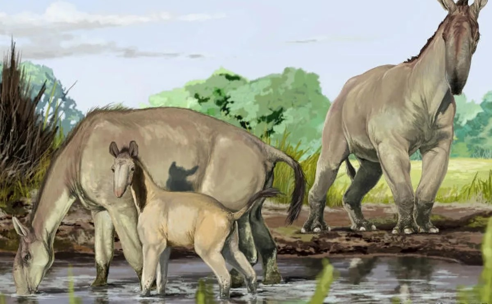
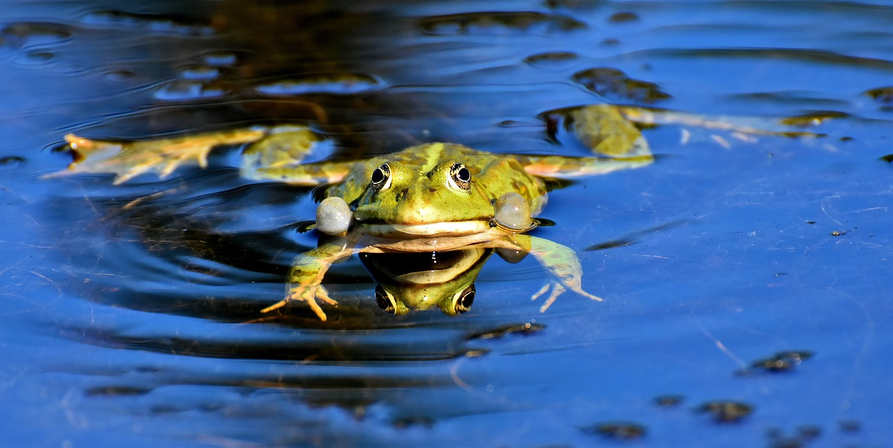
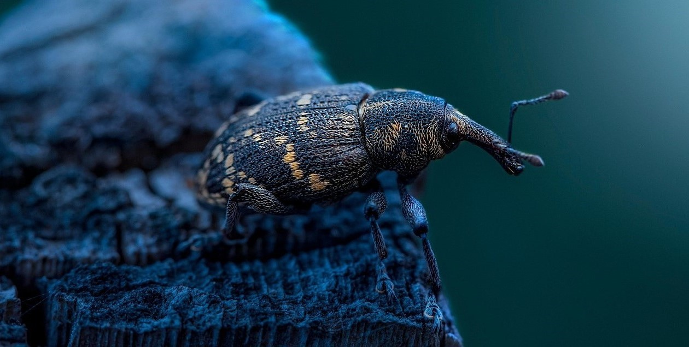
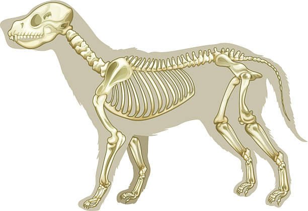
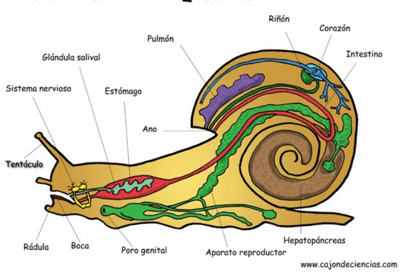
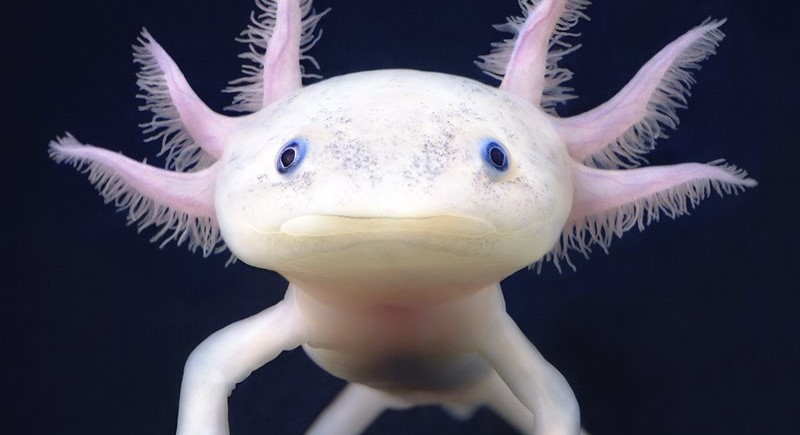
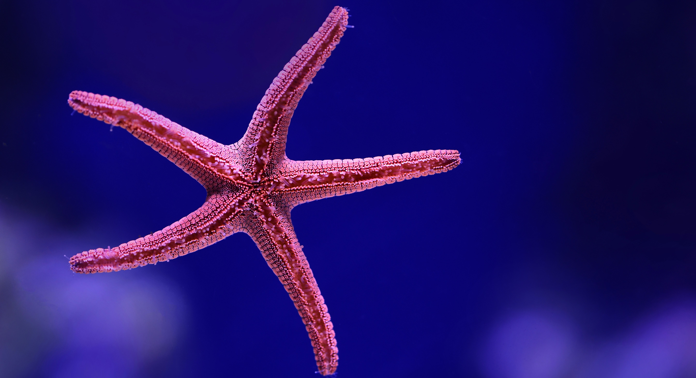

|
|
|
|
¿Qué son los animales?
Los animales o metazoos son los seres vivos que integran el reino animal (Animalia), uno de los cuatro reinos de seres vivos eucarióticos (o sea, de organismos que tienen células con núcleo), y que se distinguen de las plantas, hongos y microorganismos. En general, los animales son seres vivos dotados de movimiento propio y autónomo, de un metabolismo basado en la respiración y de un sistema nervioso que les permite interactuar con su entorno.
En su totalidad, los animales son extremadamente diversos y se encuentran adaptados a todos los hábitats del planeta, estableciendo relaciones de distinto tipo entre sí y con otros seres vivos. El ser humano pertenece también al reino animal, pero dado que es el único ser vivo dotado de consciencia propia y lenguaje articulado que se conoce, generalmente se le otorga una categoría filosófica aparte dentro del conjunto de los animales. Visto así, un ser humano sería un animal dotado de lenguaje.
|
Origen de los animales
Los animales aparecieron sobre la faz de la Tierra hace aproximadamente 542 millones de años, durante la llamada “explosión cámbrica” o radiación evolutiva del Cámbrico.
Se ignora cuáles fueron exactamente los motivos para que en ese entonces ocurriera una diversificación tan masiva y abundante de la vida. Sin embargo, se sabe que de los cerca de 20 filos (phylum) o grupos de especies animales conocidos hasta ahora, al menos 11 tuvieron su origen en esa época específica, es decir, que allí surgieron las primeras y más antiguas especies animales multicelulares, cuyos descendientes pueden hallarse todavía en el planeta.
La palabra “animal” proviene del latín animalis, traducible como “ser dotado de aliento” (o sea, de anima), es decir, “criatura que respira”. La ciencia que estudia a los animales se llama zoología, y es una rama específica de la biología, que permite clasificar a los animales de acuerdo a distintas categorías, atendiendo a rasgos como su comportamiento, la anatomía o incluso su relación con el ser humano.

|
Características
- Son seres vivientes eucariotas, es decir, que tienen células dotadas de un núcleo celular bien definido, en el que se encuentra la información genética reunida; y también pluricelulares, esto es, cuyos cuerpos están conformados por más de una célula.
- A diferencia de las plantas y los hongos, las células de los animales no tienen pared celular (sino una membrana plasmática, más flexible), ni vacuolas, ni plasmodesmos.
- Su metabolismo es de tipo aerobio, o sea, que requiere de un suministro continuo de oxígeno (ya que obtiene su energía de la oxidación de moléculas orgánicas). Al proceso de capturar el oxígeno del entorno (ya sea aire o agua) se le conoce como respiración y, por lo tanto, todos los animales respiran.
- Están dotados en la gran mayoría de los casos de movilidad propia y autónoma, es decir, que pueden cambiar de entorno a voluntad, gracias a la presencia de órganos motrices como cilios, patas, aletas, alas, entre otros.
- Son especies sexuadas, o sea, de reproducción predominantemente sexual. Este tipo de reproducción requiere de un macho y una hembra para producir un nuevo individuo, a través de la unión de sus células sexuales bien diferenciadas o gametos. Existen, sin embargo, algunas especies animales capaces de reproducción asexual en determinadas circunstancias.
- Sus cuerpos están compuestos a partir del colágeno, una proteína estructural que se halla en todas las fibras de sus tejidos. Estos últimos, además, suelen tener un altísimo nivel de diferenciación y especialización.
- Sus cuerpos presentan simetría bilateral: se pueden dividir con una línea transversal en dos mitades idénticas y correspondientes. La excepción a esta norma la constituyen algunos pocos filos primitivos como los poríferos y equinodermos.
|
Se clasifican:
El reino animal es muy diverso, con millones de especies que habitan nuestro planeta. Para comprender y estudiar esta riqueza biológica, los científicos han desarrollado sistemas de clasificación que nos permiten agrupar a los animales en categorías basadas en sus características comunes.
Una de las clasificaciones más fundamentales divide a los animales en dos grandes grupos: los vertebrados e invertebrados. En este artículo, exploraremos en detalle estos dos grupos y descubriremos las diferencias que los distinguen.
|
Los Vertebrados
Los vertebrados constituyen un grupo de animales que poseen una columna vertebral o espina dorsal. Esta estructura proporciona soporte y protección a la médula espinal, que es el principal componente del sistema nervioso central.
Los vertebrados se caracterizan por tener un esqueleto interno compuesto por huesos o cartílagos, lo que les confiere una estructura más rígida. Algunos ejemplos de vertebrados incluyen mamíferos, aves, reptiles, anfibios y peces.
|
Los Invertebrados
No tienen columna vertebral ni esqueleto interno articulado, aunque sí tienen notocorda.
Sin embargo, es posible que algunos de los animales de este grupo presenten exoesqueleto, como ocurre en los artrópodos.
Por otro lado, es un grupo de animales muy extenso y diverso que además tienen en común que son ectotermos, es decir, que no pueden mantener la temperatura corporal constante.
Otra característica, es que pueden presentar simetría radiada, es decir, no puede dividirse el cuerpo del animal en dos partes iguales.
El origen de los invertebrados es difícil de determinar, ya que de los primeros que habitaron la Tierra no existen pruebas claras porque eran de cuerpo blando y cuerpo pequeño y, por lo tanto, no quedaron evidencias fósiles directas.
|
|

|

|
Características de los vertebrados:
El esqueleto interno: Los vertebrados tienen como eje la columna vertebral formada por vértebras que se articulan y que protegen a la médula espinal del sistema nervioso, además, tienen el cráneo que protege al encéfalo. El esqueleto interno puede ser óseo o cartilaginoso. -
La mandíbula: Casi todos los vertebrados tienen una mandíbula en la boca, en la que se desarrollan los dientes, excepto los vertebrados acuáticos o peces agnatos (que significa “sin mandíbula”).
Las extremidades: Los vertebrados tienen extremidades, como aletas, alas o patas, que les permiten desplazarse según el medio que habitan, excepto algunos vertebrados llamados ápodos, que significa “carente de patas”, como las serpientes que se desplazan por movimientos sinuosos de su cuerpo. La piel: Los grupos de vertebrados tienen distintos tipos de tegumento, es decir, de tejido que recubre la piel. Pueden ser: escamas como en el pez salmón, dentículos dérmicos como en el tiburón, caparazón duro como en la tortuga, plumas como en el halcón o pelos como en el lobo. Reproducción de los vertebrados:
Los vertebrados se reproducen sexualmente y, casi todos se dividen en machos y hembras. Recuerda que la reproducción sexual es la unión de los gametos durante la fertilización, produciendo así descendencia genéticamente variable. Generalmente, las especies acuáticas presentan una fertilización externa, mientras que las especies terrestres presentan una fertilización interna.
Los vertebrados presentan una de las siguientes tres estrategias reproductivas: oviparidad, ovoviviparidad o viviparidad:
- Oviparidad: se refiere al desarrollo del embrión dentro de un huevo fuera del cuerpo de la madre. Esto ocurre en la mayoría de los anfibios, reptiles y todas las aves.
- Ovoviviparidad: se refiere al desarrollo del embrión dentro del huevo y dentro del cuerpo de la madre hasta que este eclosiona. La madre no nutre al embrión mientras está dentro del huevo. Esto ocurre en algunas especies de peces y reptiles.
- Viviparidad se refiere al desarrollo y nutrición de un embrión dentro del cuerpo de la madre. El nacimiento puede ser seguido por un periodo de cuidado parental de la cría. Esta estrategia reproductiva ocurre en casi todos los mamíferos.
|
Características de los invertebrados:
Digestión:
Los invertebrados tienen uno de los dos sistemas digestivos: uno incompleto o uno completo. Ambos se muestran en la Imagen siguiente . Un sistema digestivo incompleto consiste en una cavidad digestiva con una abertura. La abertura única sirve como boca y como ano. Un sistema digestivo completo consiste en un tracto digestivo con dos aberturas. Una abertura es la boca. La otra es el ano.- Todos los invertebrados se pueden mover por si mismos durante, al menos, alguna etapa de su ciclo de vida. Sin embargo, su movimiento podría ser diferente. Varios tipos de movimientos se describen a continuación.
- Algunos invertebrados son simplemente transportados por las corrientes de agua. No pueden controlar su movimiento en una dirección particular. Un ejemplo es una medusa.
- Otros invertebrados pueden contraer músculos para moverse independientemente en las corrientes de agua o sobre superficies sólidas. También pueden controlar la dirección a la que se mueven. Un ejemplo es el ascárido. Se puede mover hacia adelante y enrás, a la izquierda o derecha.
- Aunque otros invertebrados tienen apéndices especializados para el movimiento. Por ejemplo, podrían tener penas articuladas para caminar o trepar, o alas para volar. Un ejemplo es un insecto como una mosca.
Sistema Nervioso:
La mayoría de los invertebrados tienen un sistema nervioso . El sistema nervioso les permite sentir y responder a su entorno. El sistema nervioso más simple de los invertebrados es solo una red de nervios que pueden sentir tacto, llamada red nerviosa (vea la Imagen siguiente ). La mayoría de los invertebrados tienen un sistema nervioso más complejo. Podría incluir un cerebro y varios órganos sensitivos diferentes.-
Reproducción:
La mayoría de los invertebrados se reproducen de manera sexual. Adultos diploides producen gametos haploides (esperma y óvulos). En algunas especies, los mismos individuos producen tanto la esperma como los óvulos). En otras especies, la esperma y los óvulos son producidos por individuos machos y hembras separadamente. La fertilización ocurre cuando una esperma y un óvulo se fusionan para formar un cigoto diploide. El cigoto se desarrolla en un embrión y, eventualmente, en un organismo adulto nuevo. Durante este proceso, podría pasar por una o más etapas larvarias. Una larva (plural, larvas) es una etapa juvenil, o inmadura, de un animal.
|
|

|

|
Algunas excepciónes de estas características:
|
Excepciónes de vertebrados:
|
Excepciónes de invertebrados:
|
Peces con respiración aérea:
Algunos peces, como el pez pulmonado, pueden respirar aire gracias a pulmones rudimentarios, lo que les permite sobrevivir fuera del agua por períodos prolongados.
Falta de mandíbulas:
La mayoría de los vertebrados tienen mandíbulas, pero los mixinos y lampreas (peces sin mandíbula) son una excepción, pues se alimentan succionando o perforando a otros organismos.
Desarrollo externo de embriones en algunos mamíferos:
La mayoría de los mamíferos llevan el desarrollo embrionario dentro del útero, pero los marsupiales (como los canguros) paren crías muy poco desarrolladas que continúan su crecimiento en una bolsa externa.
Vertebrados sin ojos funcionales:
Algunas especies, como el pez cavernícola (Astyanax mexicanus), han perdido la vista completamente debido a la adaptación a la oscuridad de cuevas profundas.
Vertebrados sin extremidades:
La mayoría de los vertebrados tienen extremidades, pero los serpientes y algunos anfibios ápodos (como las cecilias) han perdido sus patas debido a la evolución.
Respiración por branquias en vertebrados terrestres:
Aunque la mayoría de los vertebrados terrestres respiran con pulmones, algunas especies de anfibios (como el ajolote) retienen sus branquias y nunca desarrollan pulmones funcionales.
|
Sistema circulatorio cerrado:
La mayoría de los invertebrados tienen un sistema circulatorio abierto, pero algunos, como los cefalópodos (pulpos y calamares), tienen un sistema circulatorio cerrado, como los vertebrados.
Cerebro altamente desarrollado:
Aunque muchos invertebrados tienen sistemas nerviosos simples, los cefalópodos poseen un cerebro complejo y gran inteligencia, algo poco común en este grupo.
Exoesqueleto de carbonato de calcio
La mayoría de los artrópodos tienen exoesqueleto de quitina, pero algunos crustáceos, como los cangrejos y langostas, lo tienen reforzado con carbonato de calcio, lo que les da mayor rigidez.
Simetría bilateral vs. radial:
La mayoría de los invertebrados tienen simetría bilateral, pero los equinodermos (estrellas de mar, erizos) presentan simetría radial en su fase adulta, aunque en su etapa larvaria son bilaterales.
Reproducción asexual en algunos grupos:
Aunque la reproducción sexual es la más común, algunos invertebrados, como las estrellas de mar y ciertos gusanos planos, pueden reproducirse asexualmente por fragmentación o gemación.
Sistemas de respiración variados:
Muchos invertebrados respiran por la piel o tráqueas, pero algunos, como los moluscos acuáticos, poseen branquias para la respiración.
|
|

|

|